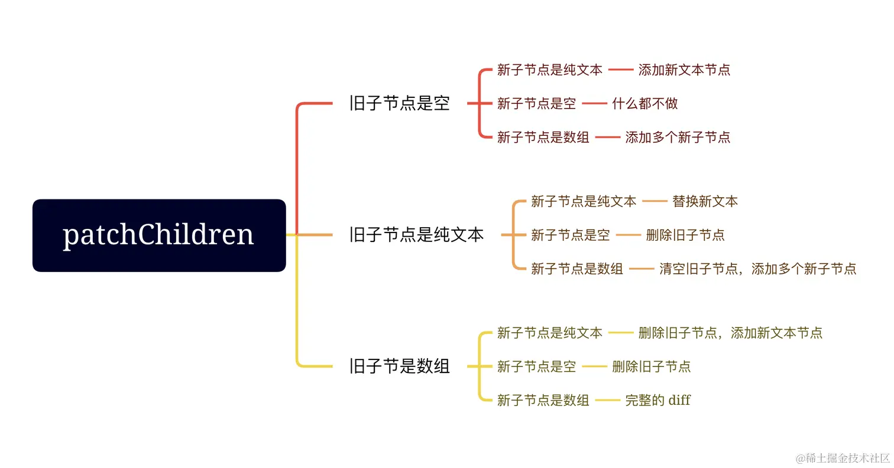
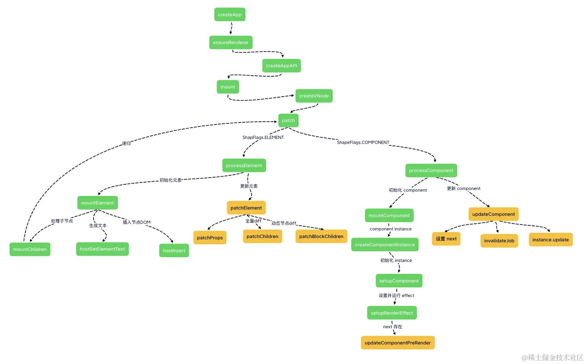

上一小节，我们介绍了数据访问代理的过程以及组件实例初始化的过程，接下来，我们将介绍组件的更新逻辑，这部分逻辑主要包含在 setupRenderEffect 这个函数中。
js复制代码const setupRenderEffect = (instance, initialVNode, container, anchor, parentSuspense, isSVG, optimized) => {
function componentUpdateFn() {
if (!instance.isMounted) {
// 初始化组件
}
else {
// 更新组件
}
}
// 创建响应式的副作用渲染函数
instance.update = effect(componentUpdateFn, prodEffectOptions)
}
在前面的小节中，我们说完了关于 mounted 的流程。接下来我们将着重来看一下组件更新的逻辑：
js复制代码const setupRenderEffect = (instance, initialVNode, container, anchor, parentSuspense, isSVG, optimized) => {
function componentUpdateFn() {
if (!instance.isMounted) {
// 初始化组件
}
else {
// 更新组件
let { next, vnode } = instance
// 如果有 next 的话说明需要更新组件的数组（props, slot 等）
if (next) {
next.el = vnode.el
// 更新组件实例信息
updateComponentPreRender(instance, next, optimized)
} else {
next = vnode
}
// 获取新的子树 vnode
const nextTree = renderComponentRoot(instance)
// 获取旧的子树 vnode
const prevTree = instance.subTree
// 更新子树 vnode
instance.subTree = nextTree
// patch 新老子树的 vnode
patch(
prevTree,
nextTree,
// 处理 teleport 相关
hostParentNode(prevTree.el),
// 处理 fragment 相关
getNextHostNode(prevTree),
instance,
parentSuspense,
isSVG)
// 缓存更新后的 DOM 节点
next.el = nextTree.el
}
}
// 创建响应式的副作用渲染函数
instance.update = effect(componentUpdateFn, prodEffectOptions)
}
这里的核心流程是通过 next 来判断当前是否需要更新 vnode 的节点信息，然后渲染出新的子树 nextTree，再进行比对新旧子树并找出需要更新的点，进行 DOM 更新。我们先来看一下 patch 的更新流程：
js复制代码function patch(n1, n2, container = null, anchor = null, parentComponent = null) {
// 对于类型不同的新老节点，直接进行卸载
if (n1 && !isSameVNodeType(n1, n2)) {
anchor = getNextHostNode(n1)
unmount(n1, parentComponent, parentSuspense, true)
n1 = null
}
// 基于 n2 的类型来判断
// 因为 n2 是新的 vnode
const { type, shapeFlag } = n2;
switch (type) {
case Text:
processText(n1, n2, container);
break;
// 其中还有几个类型比如： static fragment comment
case Fragment:
processFragment(n1, n2, container);
break;
default:
// 这里就基于 shapeFlag 来处理
if (shapeFlag & ShapeFlags.ELEMENT) {
processElement(n1, n2, container, anchor, parentComponent);
} else if (shapeFlag & ShapeFlags.STATEFUL_COMPONENT) {
processComponent(n1, n2, container, parentComponent);
}
}
}
首先判断当 n1 存在，即存在老节点，但新节点和老节点不是同类型的节点情况，那么执行销毁老节点，新增新节点。那么 Vue 如何判断是否是不同类型的节点呢？答案就在 isSameVNodeType 函数中：
js复制代码export function isSameVNodeType(n1, n2) {
// 新老节点的 type 和 key 都相同
return n1.type === n2.type && n1.key === n2.key
}
这里比如从 div 变成了 p 标签，那么 isSameVNodeType 就会是个 false。
如果当新老节点是同类型的节点，则会根据 shapeFlag不同走到不同的逻辑，如果是普通元素更新，那么就会走到 processElement 的逻辑中；如果是组件更新，则会走到 processComponent 中。
接下来分别看看这两种更新机制有什么不同。
这里我们也着重看一下 processElement 的更新流程：
js复制代码const processElement = (n1, n2, container, anchor, parentComponent, parentSuspense, isSVG, optimized) => {
isSVG = isSVG || n2.type === 'svg'
if (n1 == null) {
// 初始化的过程
}
else {
// 更新的过程
patchElement(n1, n2, parentComponent, parentSuspense, isSVG, optimized)
}
}
processElement 更新逻辑调用 patchElement 函数：
js复制代码const patchElement = (n1, n2, parentComponent, parentSuspense, isSVG, optimized) => {
const el = (n2.el = n1.el)
let { patchFlag, dynamicChildren, dirs } = n2
// ...
// 旧节点的 props
const oldProps = (n1 && n1.props) || EMPTY_OBJ
// 新节点的 props
const newProps = n2.props || EMPTY_OBJ
// 对比 props 并更新
patchProps(el, n2, oldProps, newProps, parentComponent, parentSuspense, isSVG)
// 先省略 dynamicChildren 的逻辑，后续介绍...
// 全量比对子节点更新
patchChildren(n1, n2, el, null, parentComponent, parentSuspense, areChildrenSVG)
}
可以看到普通元素的更新主要做的就是先更新 props ，当 props 更新完成后，然后再统一更新子节点。关于如何进行 patchProps 做节点的属性更新不是本小节的重点，这里先跳过。
这里省略了对
dynamicChildren存在时，执行patchBlockChildren的优化diff过程，我们直接先看全量diff也就是patchChildren函数。关于patchBlockChildren我们将在编译过程中的优化小节中进行详细介绍
接着来看 patchChildren 更新子节点的函数：
js复制代码const patchChildren = (n1, n2, container, anchor, parentComponent, parentSuspense, isSVG, optimized = false) => {
// c1 代表旧节点的子节点元素
const c1 = n1 && n1.children
const prevShapeFlag = n1 ? n1.shapeFlag : 0
// c2 代表新节点的子节点元素
const c2 = n2.children
const { patchFlag, shapeFlag } = n2
// 新节点是文本
if (shapeFlag & ShapeFlags.TEXT_CHILDREN) {
// 旧节点是数组
if (prevShapeFlag & ARRAY_CHILDREN) {
// 卸载旧节点
unmountChildren(c1, parentComponent, parentSuspense)
}
if (c2 !== c1) {
// 新旧节点都是文本，但内容不一样，则替换
hostSetElementText(container, c2)
}
} else {
// 新节点不为文本
// 旧节点是数组
if (prevShapeFlag & ARRAY_CHILDREN) {
// 新节点也是数组
if (shapeFlag & ARRAY_CHILDREN) {
// 进行新旧节点的 diff
patchKeyedChildren(c1, c2, container, anchor, parentComponent, parentSuspense, isSVG, optimized)
} else {
// 卸载旧节点
unmountChildren(c1, parentComponent, parentSuspense, true)
}
} else {
// 新节点不为文本
// 旧节点不是数组
// 旧节点是文本
if (prevShapeFlag & TEXT_CHILDREN) {
// 则把它清空
hostSetElementText(container, '')
}
// 新节点是数组
if (shapeFlag & ARRAY_CHILDREN) {
// 挂载新节点
mountChildren(c2, container, anchor, parentComponent, parentSuspense, isSVG, optimized)
}
}
}
}
对于子节点来说，节点类型只会有三种可能，分别是：文本节点、数组节点、空节点。所以这个方法里所有的 if else 分支就是在考虑新旧节点可能的全部情况，并进行相应的处理。这里流程分支有点多，画个图大家就明白在做啥了：

其中新旧节点都是数组的情况涉及到我们平常所说的 diff 算法，会放到后面专门去解析。
看完处理DOM元素的情况，接下来看处理vue组件。
js复制代码const processComponent = (n1, n2, container, anchor, parentComponent, parentSuspense, isSVG, optimized) => {
if (n1 == null) {
// 初始化的过程
}
else {
// 更新的过程
updateComponent(n1, n2, parentComponent, optimized)
}
}
processComponent 更新逻辑调用 updateComponent 函数：
js复制代码const updateComponent = (n1, n2, optimized) => {
const instance = (n2.component = n1.component)!
// 根据新老节点判断是否需要更新子组件
if (shouldUpdateComponent(n1, n2, optimized)) {
//...
// 如果需要更新，则将新节点 vnode 赋值给 next
instance.next = n2
// 执行前面定义在 instance 上的 update 函数。
instance.update()
} else {
// 如果不需要更新，则将就节点的内容更新到新节点上即可
n2.el = n1.el
instance.vnode = n2
}
}
updateComponent 函数首先通过 shouldUpdateComponent 函数来判断当前是否需要更新。 因为有些 VNode 值的变化并不需要立即显示更新子组件，举个例子：
html复制代码<template>
<div>{{msg}}</div>
<Child />
</template>
<script setup>
import { ref } from 'vue'
const msg = ref('hello')
<script>
因为子组件不依赖父组件的状态数据，所以子组件是不需要更新的。这也从侧面反映出 Vue 的更新不仅是组件层面的细粒度更新，更在源码层面帮我们处理了一些不必要的子节点更新！
最后执行的 instance.update，这个函数其实就是在 setupRenderEffect 内创建的。最终子组件的更新还会走一遍自己副作用函数的渲染，然后 patch 子组件的子模板 DOM，接上上面的流程。
回过头来再看这里我们多次出现了 next 变量。为了更好地理解整体的流程，我们再来看一个 demo：
html复制代码<template>
<div>
hello world
<hello :msg="msg" />
<button @click="changeMsg">修改 msg</button>
</div>
</template>
<script>
import { ref } from 'vue'
export default {
setup () {
const msg = ref('你好')
function changeMsg() {
msg.value = '你好啊，我变了'
}
return {
msg,
changeMsg
}
}
}
</script>
// hello.vue
<template>
<div>
{{msg}}
</div>
</template>
<script>
export default {
props: {
msg: String
}
}
</script>
这里有个 App.vue 组件，内部有一个 hello 组件，我们来从头再捋一下整体的流程，就清楚了 next 的作用。
修改 msg 后， App 组件自身的数据变化，导致 App 组件进入 update 逻辑，此时是没有 next 的，接下来渲染新的子组件vnode，得到真实的模板vnode nextTree，用新旧subTree进行patch。patch的元素类型是 div，进入更新普通元素的流程，先更新props，再更新子节点，当前div下的子节点有Hello组件时，进入组件的的更新流程。Hello 组件时，根据 updateComponent 函数执行的逻辑，会先将Hello组件 instance.next 赋值为最新的子组件 vnode，之后再主动调用instance.update 进入上面的副作用渲染函数，这次的实例是 Hello 组件自身的渲染，且 next 存在值。当 next 存在时，会执行 updateComponentPreRender 函数：
js复制代码const updateComponentPreRender = (instance, nextVNode, optimized) => {
// 新节点 vnode.component 赋值为 instance
nextVNode.component = instance
// 获取老节点的 props
const prevProps = instance.vnode.props
// 为 instance.vnode 赋值为新的组件 vnode
instance.vnode = nextVNode
instance.next = null
// 更新 props
updateProps(instance, nextVNode.props, prevProps, optimized)
// 更新 slots
updateSlots(instance, nextVNode.children)
}
updateComponentPreRender 函数核心功能就是完成了对实例上的属性、vnode 信息、slots 进行更新，当后续组件渲染的时候，得到的就是最新的值。
总而言之，next 就是用来标记接下来需要渲染的子组件，如果 next 存在，则会进行子组件实例相关内容属性的更新操作，再进行子组件的更新流程。
本节着重介绍了组件的更新逻辑，我们再补齐一下第二节中的流程图：

本节介绍了关于普通元素的简单更新过程，那关于复杂的更新过程的逻辑，也就是新老子节点都是数组的普通元素，应该如何进行更新呢？这就涉及到了 diff 算法，我们下节接着介绍。